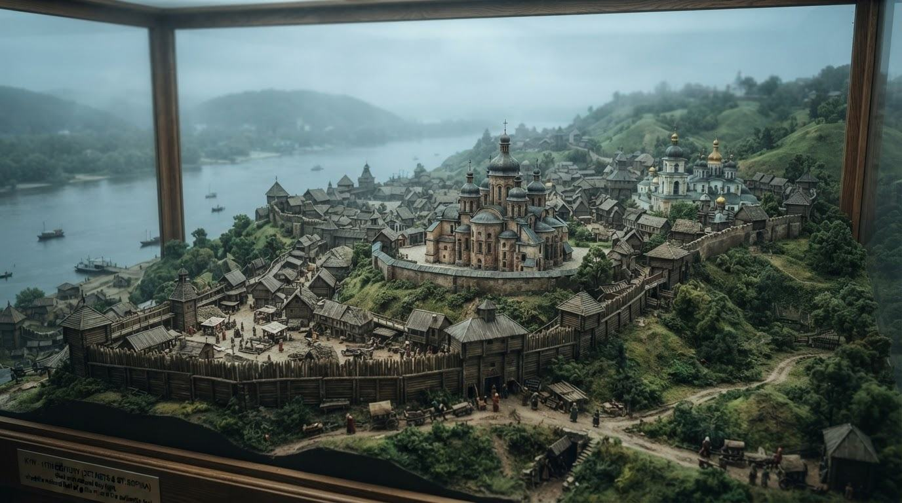
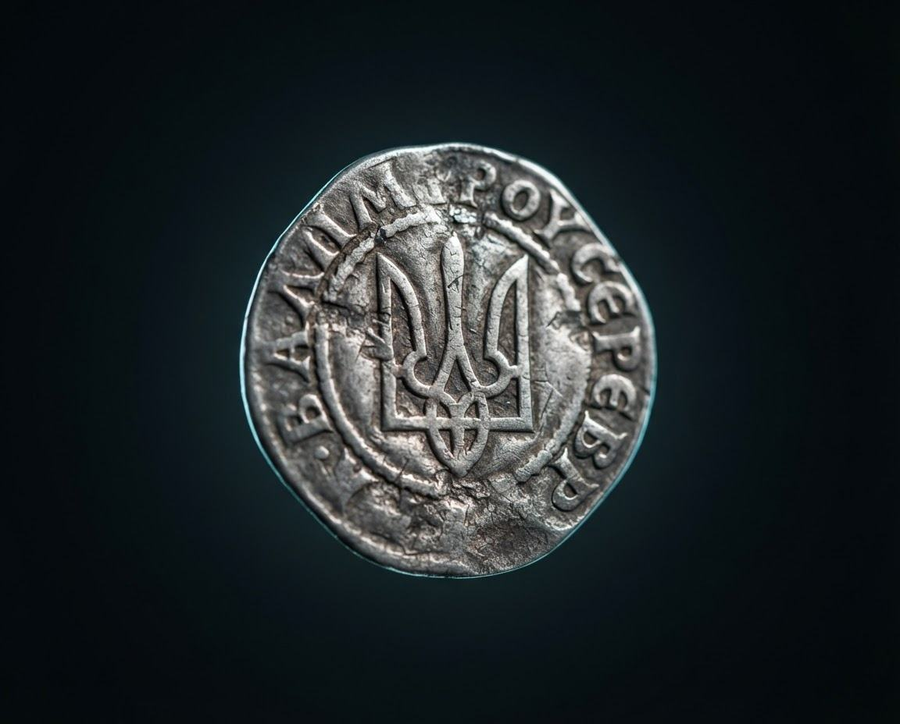
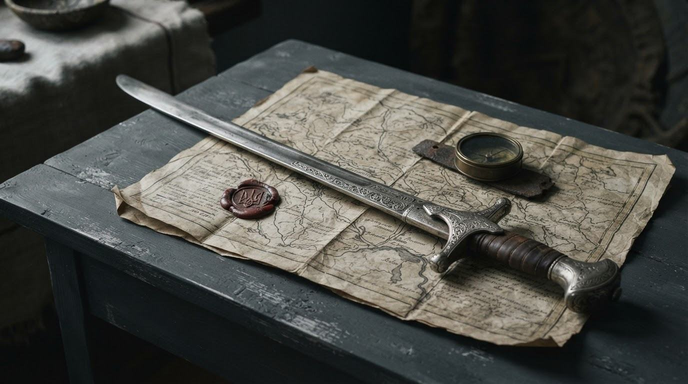

IX–XIII ст.Київ крізь століття
Впізнавай пам’ятки й відкривай історію міста, що стало серцем Русі.
Початковий рівеньСкоро
Історія України. Твоя нова перспектива.
Відкривай історію України через ігри, досліджуй ключові події та бач, як зростають твої знання.
Першу гру можна пройти без реєстрації

01 / Ігри
Обери виклик — і перетвори факти на відкриття.

IX–XIII ст.Впізнавай пам’ятки й відкривай історію міста, що стало серцем Русі.

XVI–XVIII ст.Поєднуй імена, події та дати. Розгадай, як творилася Гетьманщина.
Віднови послідовність подій Української революції 1917–1921 років.
02 / Теорія
Коротко про важливе: зрозумілі пояснення, ключові постаті та зв’язки між подіями. Читай, щоб бачити більше.
Відкрити теорію →03 / Результати
Створи акаунт, щоб зберігати результати ігор, повертатися до складних тем і помічати власний прогрес.
У власному темпі. Без перегонів з іншими.